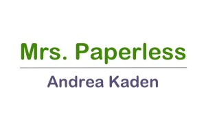
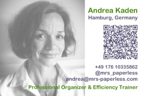

Mrs. Paperless is organizing SF – BoxWorks
Why Attend BoxWorks?
Diese Frage habe ich mir nach der persönlichen Einladung der Veranstalter, die ich im August erhalten hatte, auch gestellt. Die Gastgeber beantworten dies so: BoxWorks is your chance to catch up on what’s happening next in the cloud. With all-star speakers, chats with decision-makers and networking in a friendly, informal environment, it’s the best ROI, hands-down. Not convinced? Doch! Nach kurzem Abwägen war ich überzeugt und bin nun hier in San Francisco, kurz vor dem ersten Konferenztag.
Hinter dem Veranstalter steckt box.com, ein hochprofessionelles, cloudbasiertes Speicher- und Kollaborationsprogramm, das unter anderem führend bei der Sicherheit in der Cloud ist.
Was sind meine Erwartungen an die Konferenztage hier?
Als Mrs. Paperless, die Firmen dabei unterstützt, wortwörtlich papierlos zu arbeiten, gehört das Wissen um neue Entwicklungen natürlich zum Tagesgeschäft. In diesem Punkt sind uns gerade US-Firmen schon einige Schritte voraus. Zur papierlosen Organisation gehört das Ausnutzen der vorhandenen Hard- und Software. Viele der dazu gehörenden Innovationen und Inspirationen kommen aus den USA. Ich denke da an technische Entwicklungen genauso wie an Praxiserfahrungen, an Methoden zur Einführung in Unternehmen und besonders wichtig: Fragen zur Sicherheit. Gerade Letzteres hat im Zuge der aktuellen „Spionageskandale“ ja nicht gerade für mehr Vertrauen gesorgt. Wenn Firmen zukünftig verstärkt papierlos arbeiten wollen, stellt sich fast immer zuerst die Frage nach sicherheitstechnischen Aspekten und deren Umsetzung durch IT-Systeme. Mir als Mrs. Paperless ist natürlich sehr daran gelegen, meine Kunden mit dem größtmöglichen und aktuellstem Wissen zu einer effizienten papierlosen Arbeitsorganisation unterstützen zu können. Das schließt Themen rund um Einsatzmöglichkeiten, Grenzen und Datenschutz mit ein.
Die von mir genannten Aspekte werden bei der BoxWorks ausführlich behandelt und ich bin gespannt, welche Experten welche Fragen der Teilnehmer wie dazu beantworten werden. Ich finde es sehr interessant, vor Ort mitzubekommen, ob nur wir als Deutsche dem Thema Datensicherheit so kritisch begegnen oder ob dies inzwischen ein internationales Phänomen geworden ist.
Und noch etwas wird sehr spannend. Wie werden mir die US-amerikanischen Firmenvertreter begegnen, gelten wir Deutsche doch immer noch als sehr effizient, organisiert und strukturiert. Fragen nach dem „wie macht ihr das?“ werden mir bestimmt das ein oder andere Mal gestellt werden.


Weitere Artikel

Gar nicht lean ist auch mal gut
Das schlanke, entschlackte, effiziente Büro ist meine Leidenschaft. Doch vor einiger Zeit habe ich erfahren, dass es manchmal gut ist, nicht lean zu sein, nicht auf die „schlanke Linie“ zu achten. Ich war eingeladen, einen …

Checkliste Reisen und Arbeiten
Immer wieder habe ich gemerkt, dass auf Reisen generell zu viel einpacke, dafür aber wichtige Kleinigkeiten, die das Leben wirklich leichter machen, gern mal vergesse. Da ich immer mehr Arbeiten und Reisen verbinde, kann das …